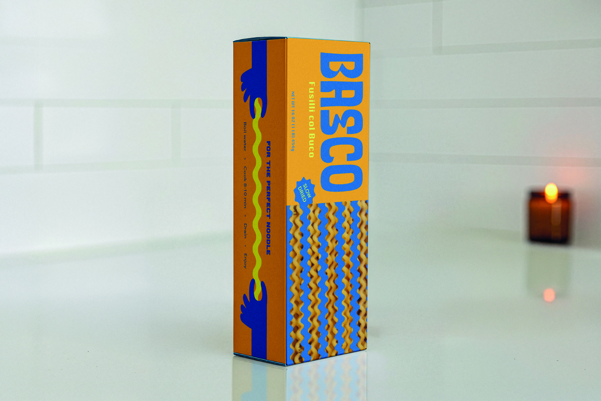
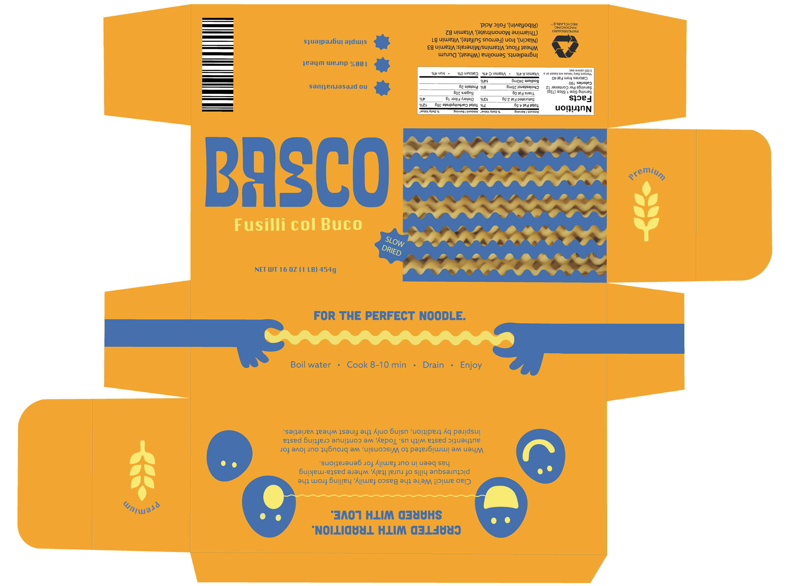

Basco
Packaging & Illustration • 2026
PRODUCT MOCKUP

This project began with the constraint of designing packaging for a fictional pasta brand, including a required die-cut window to reveal the product. I started by selecting fusilli for its dynamic, playful form and used it as a foundation for the visual language.
From there, I customized a typeface to reflect the movement and personality of the pasta, then built out supporting illustrations and graphic elements to create a simple but engaging system.
Color was used intentionally to balance playfulness with clarity. A complementary palette of amber and cobalt blue creates strong contrast, while a softer yellow adds warmth without overwhelming the design.

FULL PACKAGE DIELINE
